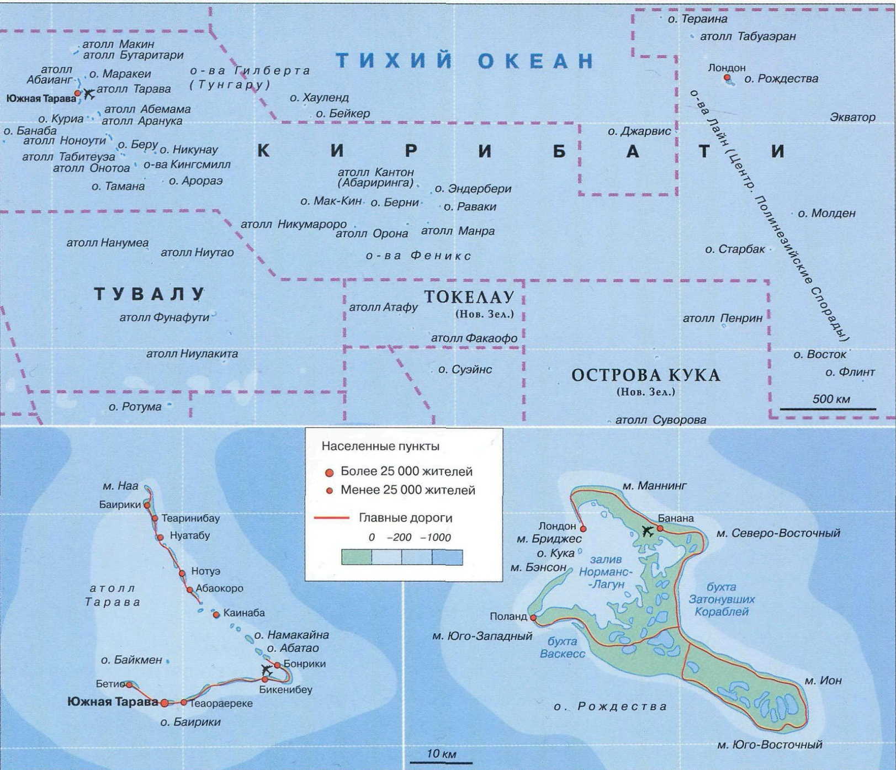

- 8 марта 2012 г. в ИТАР-ТАСС было опубликовано заявление Президента Кирибати Ано-те Тонга, что его страна находится под угрозой полного затопления вследствие подъема уровня воды в океане, а правительство находится в стадии переговоров с властями соседних государств о возможном месте переселения жителей. 26 сентября 2012 г. президент Тонга выступил перед Генеральной Ассамблеей ООН в Нью-Йорке с очередным тревожным обращением к мировому сообществу. По его словам, Кирибати сталкивается с реальной проблемой потери территории, несколько деревень уже были переселены и в ближайшее время возможна полная эвакуации населения с острова. Тем временем правительство Кирибати ускоренно занимается профессиональной подготовкой своих граждан, чтобы они могли конкурировать на рынке труда более развитых стран.
- Самый обширный в мире атолл — Киритимати, или остров Рождества; здесь водится около 5 млн особей морских птиц 35 видов, из них гнездятся 18 видов, а по количеству особей больше всего крачек и буревестников.
- Одно место в парламенте Кирибати сохраняется для двух представителей атолла Банаба, все жители которого перебрались на остров Раби в архипелаге Фиджи, когда их родной остров стал непригодным для проживания после вывоза фосфатов. Сейчас Банаба представляет собой голую скалу.
- В мае 1957 г. в районе атолла Киритимати (остров Рождества) была испытана первая британская водородная бомба.
КИРИБАТИ
Страна на атоллах

СТРАНА В ЧЕТЫРЕХ ПОЛУШАРИЯХ
Кирибати:
именно так произносят микронезийцы название островов Гилберта,
открытых англичанами в конце XVIII в.
- Атолл Тарава: Культурный центр (коллекция изделий местных промыслов); артиллерийские орудия и укрепления времен битвы заТа-раву, мемориальная часовня в деревне Абаокоро (о. Бетио на юго-западе Таравы).
- Атолл Бутаритари («Запах моря»): рощи хлебного дерева, обломки двадцати самолетов времен Второй мировой войны.
- Атолл Арораэ: Навигационные камни Арораэ, или Те-Атибу-ни-Борау.
- Атолл Банаба (Оушен): бывшее место разработки фосфатов.
- Официальное название: Республика Кирибати.
- Столица: г. Южная Тарава, 43 000 чел. (2009 г.).
- Крупнейшие города: поселки Туарабу (острова Гилберта, 5502 чел., 2005 г.), Буарики (острова Гилберта, 4898 чел., 2005 г.).
- Денежная единица: австралийский доллар.
- Религии: католицизм — 55% протестантизм (конгрецио-нализм) — 36%, мормоны — 3,1%, бахаизм — 2,2%, адвентисты седьмого дня — 1,9%, другие —1,8% (2005 г.); анимизм.
- Язык: кирибати, английский (язык официальных документов).
Экваториальный тропический. Среднегодовая температура: +27...+29°С Среднегодовое количество осадков 1000-4000 мм. Относительная влажность воздуха: 75-80%. Тайфуны и торнадо.
Кирибати — государство, расположенное на островах и атоллах Тихого океана, находящихся по обе стороны экватора. Страну пересекает условная линия перемены дат, проходящая от полюса до полюса, по разные стороны которой местное время отличается примерно на сутки. Благодаря этому Кирибати обладает уникальным географическим положением: это единственная страна в мире, находящаяся сразу в четырех полушариях: Северном, Южном, Восточном и Западном. Люди живут на 21 из 33 островов: 16 - архипелага Гилберта (Тунгару), 8 - архипелага Феникс, 8 - архипелага Лайн (Центральные Полинезийские Спорады) и на острове Банаба (Оушен). По своему происхождению все острова являются коралловыми атоллами. Острова Гилберта образовались на подводных вершинах гор Микронезии, острова Феникс - на вершинах южной части Тихоокеанской плиты, острова Лайн - на пиках подводных хребтов, протянувшихся на востоке Центральной котловины Тихого океана. Все острова окружены цепочками рифов и очень низкие: средняя высота над уровнем моря - 5-7м. Относительно высокими можно считать острова Рождества и Банаба. Насмотря на свое экваториальное положение, Кирибати не отличается богатством и разнообразием природы. Рек здесь нет вообще, пресноводные озера имеются лишь на островах Рождества и Вашингтон. Слой почвы очень тонок, и дождевая влага быстро просачивается и уходит в пористое коралловое основание островов. Как и всюду на экваторе, температура воздуха на островах ровная круглый год: около +30°С. Специфическим бедствием этих невысоких островов является изменение береговой линии в результате разрушительной деятельности прибоя и торнадо, частых в период с ноября по март. Острова были заселены австронезийскими племенами еще в I тысячелетии до н. э. В XV в. сюда массово переселились жители островов Самоа, Тонга и Фиджи, и, когда здесь появились европейцы, на островах уже сформировались племена и система управления с зачатками феодализма. Первыми сюда прибыли испанцы: в 1606 г. Педро Фернандес де Кирос - последний из великих испанских мореплавателей - подошел к атоллу Бутаритари, дав ему имя Буэн-Виахе, что можно перевести как «Счастливого пути!» В XVII в. этот регион океана активно начали исследовать англичане, но лишь в первой половине XIX в. все острова были нанесены на карты. Честь подвести итоги исследования островов будущей Республики Кирибати принадлежит русскому ученому-гидрографу А. И. Крузенштерну (1770-1846 гг.), который в 1820 г. назвал атоллы именем их первооткрывателя — английского капитана Томаса Гилберта. В истории этих мирных островов было немало горьких страниц. В XIX в. здесь начали селиться белые китобои и матросы, которые привезли ранее неведомые болезни. Миссионеры принялись христианизировать местное население, начался вывоз мужчин в рабство для работы на плантациях Фиджи и Гавайских островов, разгорелись межплеменные войны. В начале XX в. Англия объявила все острова своей колонией. На них также претендовали США и Новая Зеландия, но колонизаторам удалось договориться о совместном управлении некоторыми островами. Во время Второй мировой войны японцы бомбили острова, а затем оккупировали их и истребили почти все местное население. Лишь в 1979 г. жители островов сумели добиться независимости и объявили о создании Республики Кирибати

Территориальные воды государства Кирибати занимают площадь, приблизительно равную одной трети Европы, но с пригодными для проживания территориями у местного населения большие проблемы. Большинство атоллов непригодны для жизни из-за отсутствия воды, к тому же находятся под угрозой затопления.
- Площадь: 811 км2.
- Население: 101 998 чел. (2012 г).
- Самая высокая точка: 81м - остров Банаба.
Промышленность: пищевая.
Сельское хозяйстворастениеводство (кокосовая пальма (копра составляет 70% экспорта), бананы, хлебное дерево, папайя), животноводство (свиноводство и птицеводство).
Рыболовство и добыча водорослей.
Традиционные промыслы, выпуск почтовых марок.
Туризм
Ферма в лагуне атолла Табитеуэа, где выращивают водоросли. «Грядки» — это веревки привязанные к шестам на мелководье. Высушенные водоросли экспортируются в США и используются как эмульгатор для пищевых продуктов.
УСКОЛЬЗАЮЩАЯ КРАСОТА АТОЛЛОВ
На островах нет традиции образовывать политические партии, а президент независимой республики всегда прислушивается к мнению традиционного Совета вождей.
собенности географии островов определили и особенности административного деления Республики Кирибати. Основная единица самоуправления — островной совет, имеющийся на каждом из обитаемых островов. Здесь проживают в основном микронезийцы, говорящие на языке Кирибати и английском, являющиеся последователями огромного количества разных религий. Дело в том, что на островах сменилось несколько волн миграции и каждая приносила свою веру. Вот почему в календаре Кирибати мирно соседствуют такие праздники, как традиционный День открытия подземных склепов Те Кау-ка Нанганга (поминовение предков), Рождество и День дароприношения. Армия на островах отсутствует, и оборона островов по договору доверена Австралии и Новой Зеландии. В прошлом население островов значительно сократилось из-за болезней и насильственного переселения, но сейчас здесь довольно высокие темпы прироста населения. Это создает большие проблемы для страны наряду с эрозией почвы и растущей нехваткой питьевой воды. Кирибати — бедная страна, она зависит от международных субсидий, но все так же, как и в древности, живет изолированной неторопливой жизнью. Основное развлечение — песни и танцы. До 1980-х гг. на островах велась разработка фосфатов, в настоящее время полностью исчерпанных. Островитяне живут за счет натурального сельского хозяйства, кустарных промыслов, ловли рыбы и экспорта копры (ядро кокосового ореха) — как и их предки. Из-за слабой инфраструктуры и отсутствия прямых рейсов, но в основном просто из-за большой удаленности от стран Европы и Северной Америки — основных «поставщиков» туристов туристические услуги оказывать фактически некому. Флора представлена сотней видов растений преимущественно завезенных людьми. Местные виды растений практически исчезли, вы-тесненные кокосовой пальмой и по-садками овощей. Остались только невысокие кустарники и мангровые заросли на побережье. Сухопутная фауна также не отличается разнообразием: здесь водится много крыс, а местное население разводит свиней и домашнюю птицу. Зато в прибрежных водах много видов рыбы, на прибрежных участках гомонят птичьи базары. Крупный орнитологический заповедник создан на острове Рождества — крупнейшем коралловом острове в Мировом океане площадью 322 км2. Именно на этом острове собирается больше количество морских птиц и находится пять закрытых биосферных заказников. Столица Кирибати — Южная Тарава на атолле Тарава — одна из наиболее населенных областей в этом участке Тихого океана, и здесь проживает около 30% населения всей страны. Этот город возник в результате слияния нескольких деревень на юге Таравы и связан с соседними островами цепочкой мостов общей протяженностью около 32 км. Главные достопримечательности Кирибати — прекрасные пляжи и живописные ландшафты, а также остатки американской и японской военной техники времен Второй мировой войны.
Воды вокруг коралловых атоллов Кирибати полны жизни: здесь обитают тысячи видов тропических рыб, кораллов, ракообразных и других представителей океанской фауны.